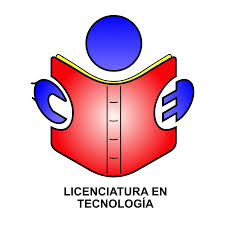
Espacios académicos para compartir proyectos, investigaciones y experiencias
La Licenciatura en Tecnología de la UPTC Seccional Duitama participa y organiza espacios académicos donde estudiantes, docentes y comunidad comparten proyectos, investigaciones y experiencias: jornadas de investigación, muestras de proyectos, congresos y redes nacionales de educación en tecnología. A continuación, información y fotos de cada uno.
En cada evento podrás ver su información y sus fotos
Última edición: 16.ª, 21 y 22 de octubre de 2026
Lugar: Duitama, Boyacá
La METIE es una muestra donde estudiantes y docentes de educación básica y media presentan proyectos productivos con fines académicos o comerciales, nacidos de experiencias de aula en Tecnología, Informática y áreas técnicas. La organizan la Escuela de Educación Industrial de la UPTC Seccional Duitama, la Secretaría de Educación Municipal, la Oficina Asesora TIC del municipio y la Cámara de Comercio de Duitama.
Busca incentivar la formación en Tecnología e Informática, divulgar experiencias de aula, promover la creatividad y la inventiva de los estudiantes e impulsar el emprendimiento con proyectos de impacto tecnológico y social. Los proyectos se presentan en temáticas como herramientas informáticas, diseño, recursos y medio ambiente, energías alternativas, sistemas de control, robótica y bienes y servicios con valor agregado.
| Imagen | Descripción |
|---|---|
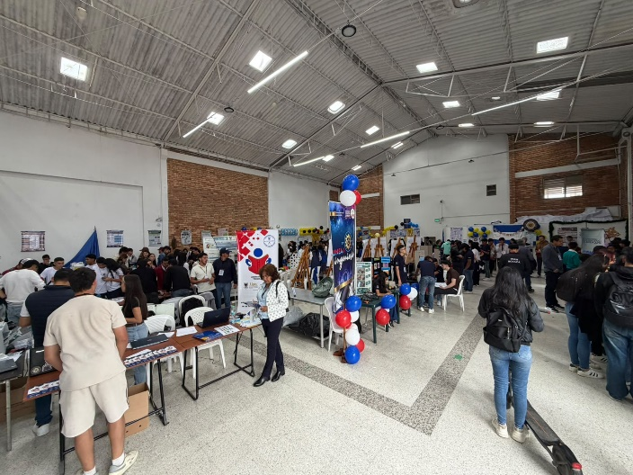 |
Vista general de la muestra METIE, donde estudiantes y docentes exponen sus proyectos de tecnología. |
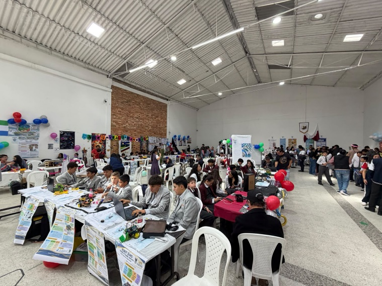 |
Stand de proyectos durante la METIE 2026. |
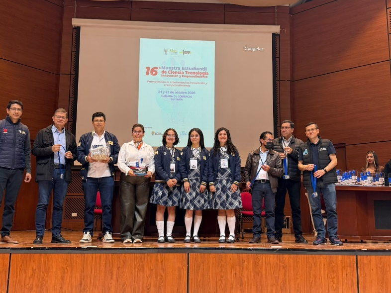 |
Reconocimiento al poryecto "Somnia". |
Fecha: I semestre de 2025
Lugar: UPTC, Facultad Seccional Duitama
En 2025 el programa realizó su primera muestra anual de proyectos de aula y la consolidó como una estrategia académica del programa. Su propósito es fortalecer las competencias pedagógicas, investigativas y tecnológicas de los estudiantes, uniendo teoría y práctica con proyectos que atienden problemas del entorno educativo y social.
Los equipos se conforman mediante una convocatoria interna, formulan su proyecto y lo presentan en formato póster, explicando el problema, la metodología, los resultados y las conclusiones. Participan estudiantes de distintos semestres, docentes orientadores y comunidad académica invitada.
Se presentaron 25 proyectos en áreas como robótica educativa, microcontroladores, software educativo, electrónica, electricidad, energía y medio ambiente, y entornos virtuales de aprendizaje (por ejemplo, cursos en el metaverso). La estrategia ha fortalecido el aprendizaje basado en proyectos, el trabajo colaborativo, la creatividad y la investigación formativa.
| Imagen | Descripción |
|---|---|
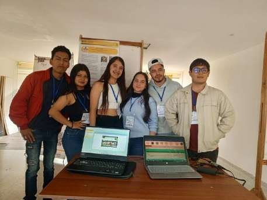 |
Proyecto de software educativo para apoyar la enseñanza y el aprendizaje. |
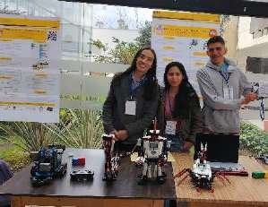 |
Proyecto de robótica educativa y microcontroladores. |
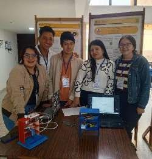 |
Proyectos relacionados con la energía y el medio ambiente. |
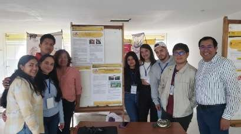 |
Docentes y estudiantes compartiendo durante la muestra. |
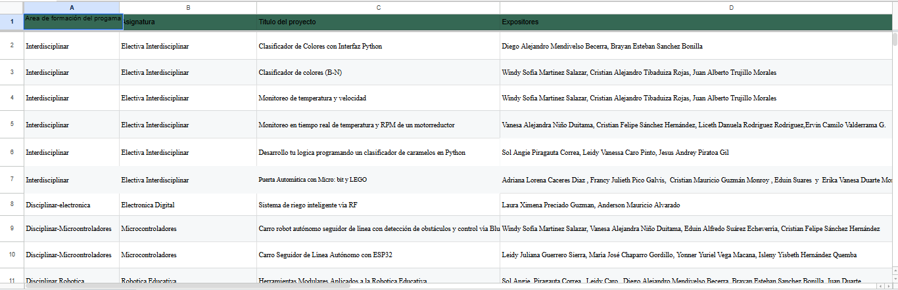 |
Vista de la muestra de proyectos de aula del programa. |
Organiza: Programa de Licenciatura en Tecnología
Lugar: UPTC, Facultad Seccional Duitama
El Día del Educador en Tecnología es un evento institucional organizado por el programa de Licenciatura en Tecnología de la Facultad Seccional Duitama de la UPTC.
Su objetivo es reconocer y exaltar la labor académica, pedagógica y humana de los docentes y estudiantes del programa.
La jornada incluye espacios académicos(conferencias y muestra de proyectosS) de integración y convivencia en los que la comunidad universitaria participa en muestras culturales, danzas, grupos musicales, actividades deportivas y juegos.
| Imagen | Descripción |
|---|---|
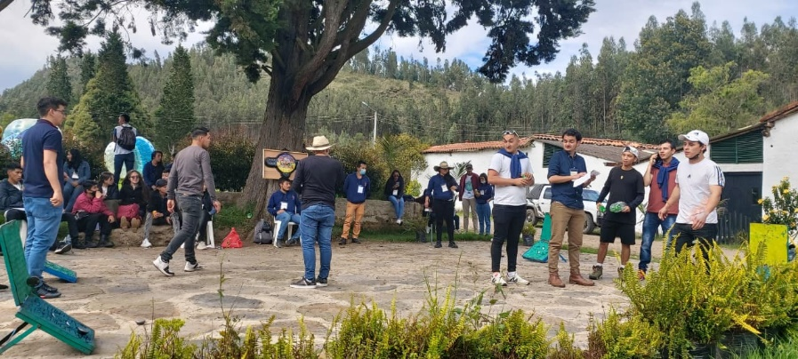 |
Jornada de integración del Día del Educador en Tecnología, 2025. |
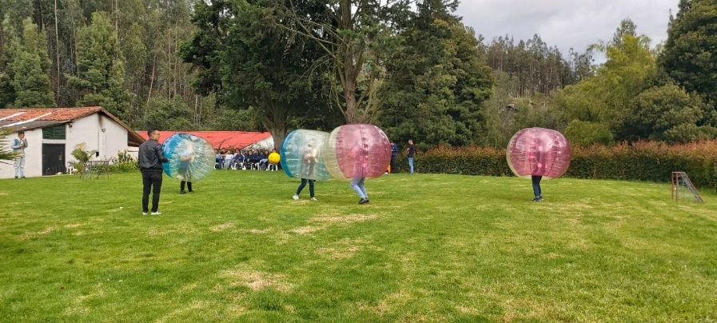 |
Estudiantes y docentes reunidos durante la jornada. |
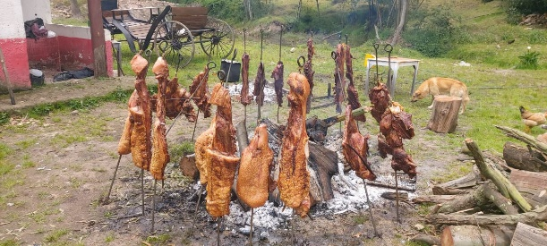 |
Almuerzo compartido por la comunidad del programa durante la integración. |
Periodicidad: Anual
Memorias: 2008, 2011 y 2013, en Paipa, Boyacá
El EDSE nació del convenio entre la UPTC y la Empresa de Energía de Boyacá (EBSA) para crear un centro regional de entrenamiento en sistemas eléctricos. Es un encuentro anual para los docentes que enseñan electricidad en colegios y en educación técnica, tecnológica y universitaria; desde su sexta versión tiene carácter nacional.
Se organiza en cuatro temáticas: seguridad, para reducir los accidentes en laboratorios y trabajos de campo; didáctica, para compartir experiencias de enseñanza; normatividad, para actualizar a los docentes en los cambios de las normas; y actualidad, con los avances en materiales y procedimientos de los sistemas eléctricos.
Han participado universidades, el SENA, el Ministerio de Minas y Energía, la CREG, la UPME y empresas del sector. Entre sus logros están la vinculación de los colegios con el Estado y la empresa privada, la creación de la asociación de Licenciados en Educación Industrial y un mejor conocimiento de las necesidades de formación de los docentes.
| Imagen | Descripción |
|---|---|
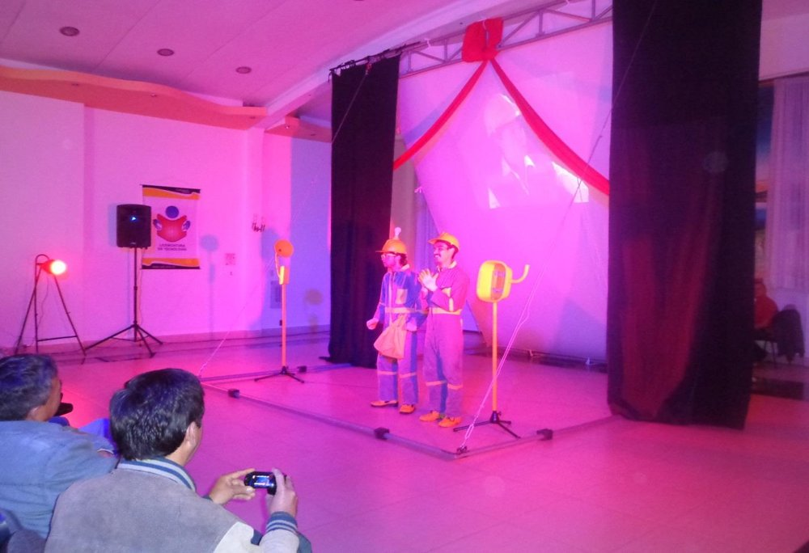 |
Sketch teatral sobre la prevención de accidentes eléctricos. |
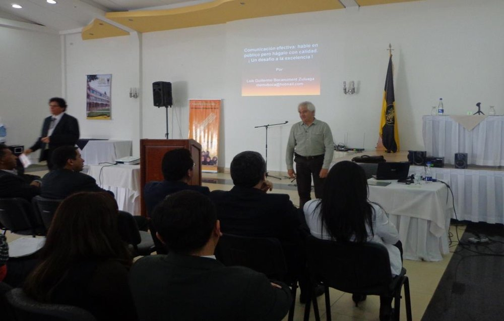 |
Conferencia “Comunicación efectiva” durante el EDSE 2013. |
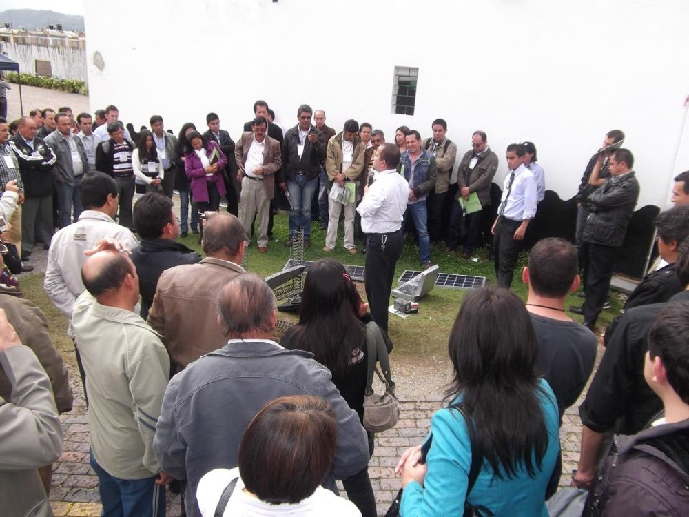 |
Formación en energía solar fotovoltaica durante el EDSE 2011. |
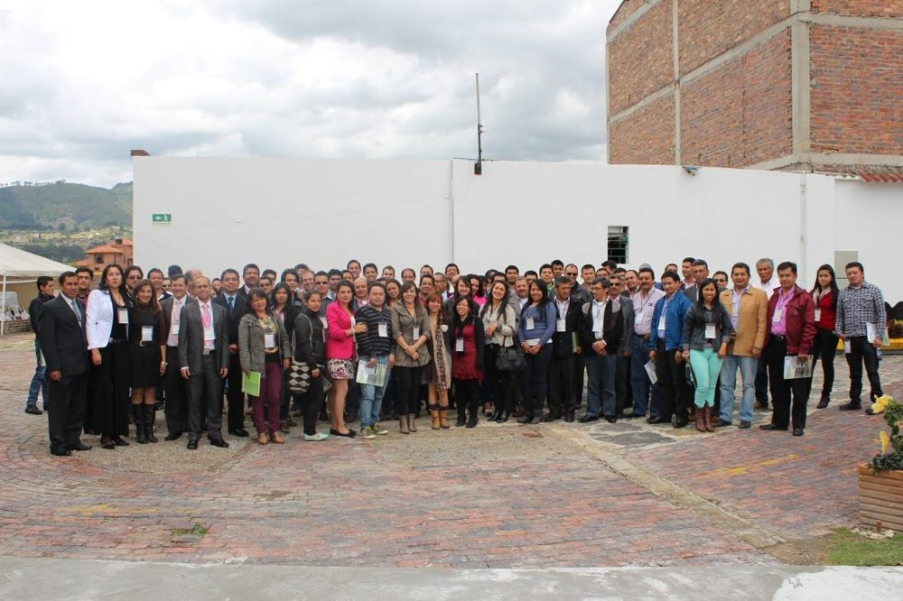 |
Participantes del EDSE 2013. |
© Todos los derechos reservados
Creado por: Solanyi Xiomara Cely
2026